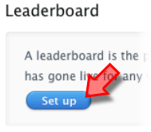
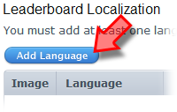

Tutorial
Page 3 of 8
Leaderboards
A single Leaderboard allows your players to compare their high scores for your game with other players in the Game Center, and you can have up to 25 Leaderboards per app. There
are also combined Leaderboards that takes the players from the single leaderboards you select and then ranks them all together. For this tutorial we are going to set up a single leaderboard
so you must now click on the button marked "Set up" to do this.

Now click on the "Add Leaderboard" button at the top of the window this opens.
Finally, you should click the "Choose" button that selects a Single Leaderboard, which will then take you to a page where you will then be asked to fill in the following the details:
- Leaderboard Reference Name - An internal name that you must provide for each category. This is the name that you will use if you search for your leaderboard in iTunes Connect.
- Leaderboard ID - A chosen alphanumeric identifier for your Leaderboard. This ID is limited to 100 characters and you should note that the Leaderboard ID is a permanent setting
and therefore cannot be edited at a later date. It must also be unique over all your games, so you cannot have any two games with the same Leaderboard ID. We recommend that you set both
the ID and the Reference Name to be exactly the same as it makes things much easier!
- Score Format Type - Choose the type of format in which you want scores for this game to be expressed in your Leaderboard (i.e. integer, elapsed time, money, etc.)
- Sort Order - Choose between ascending or descending for the display of your Leaderboard scores.
- Score Range (optional) - Define the score range using 64-bit signed integers. The values must be between the long min (-2^63) and long max (2^63 - 1) with any scores outside of this range
being deleted.
You will see that below this there is a section for editing the language of your leaderboard, and you should know that this section is of vital importance as it actually controls how your leaderboard will
be displayed and includes far more options than just localisation. Click the "Add Language" button now.

The following options are available to you:
- Language - This is the language in which your Leaderboard will appear.
- Name - Enter the Reference Name of your Leaderboard in the language you have selected.
- Score Format Type - This will determine how your scores are displayed on your Leaderboard for the specified language. For example, if your app is scored with money, you may want to specify different
types of money based on the language you select. This drop-down will be populated based on your Score Format Type chosen above.
- Score Format Suffix - This will be added to the end of scores displayed on your Leaderboard and can be set with a singular and plural suffix. This is optional, but is useful for clarifying the type of
score your game uses, and can be anything you want, for example "points", "coins", or "hits".
- Image - The leaderboard image must be a .jpeg, .jpg, .tif, .tiff, or .png file that is 512x512 pixels, at least 72 DPI, and in the RGB color space. This will be displayed on devices.
Once you have finished setting this up, you can click on the "Save" button which will take you back to the games Game Center page, and there you can see that under the section "Leaderboard" it
now tells you that a leaderboard has been set.
Click on the Next button to go to the next page of the tutorial.